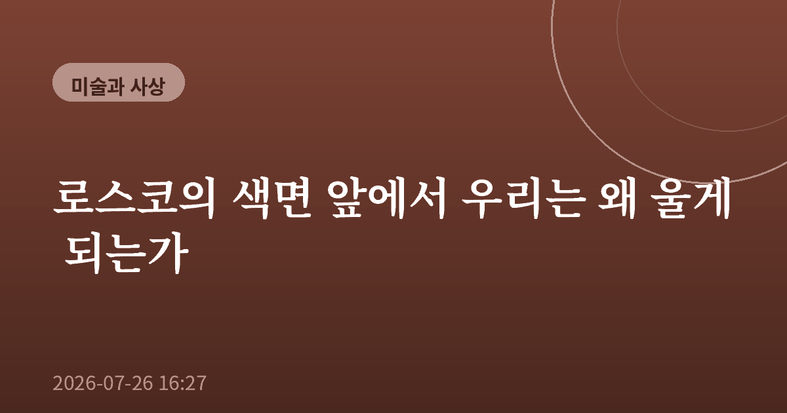
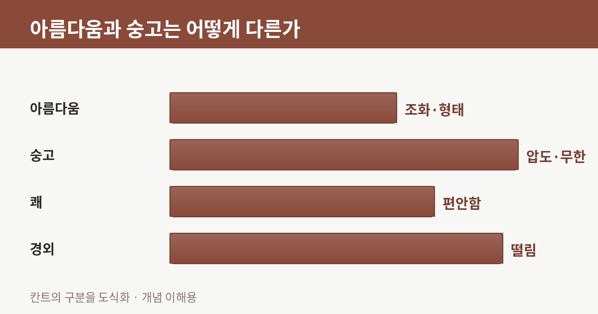
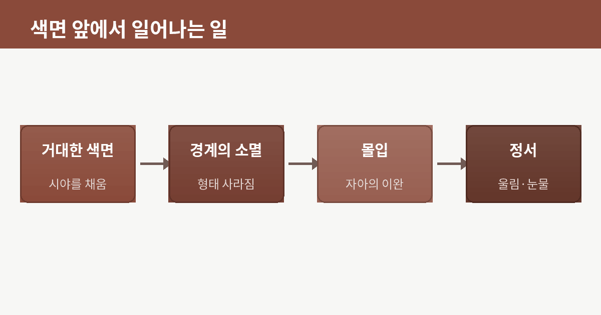
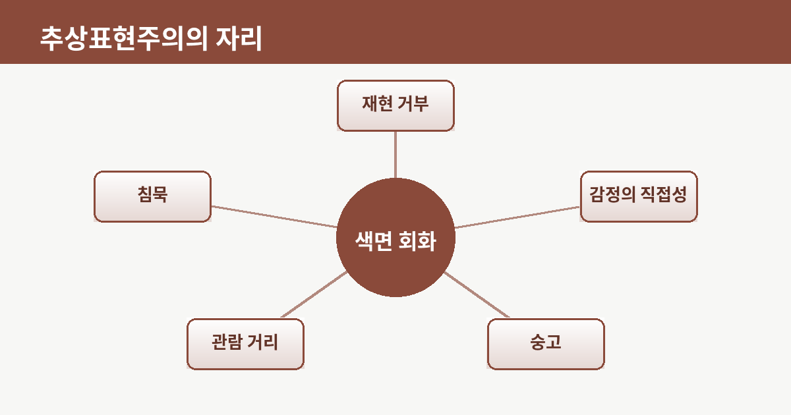
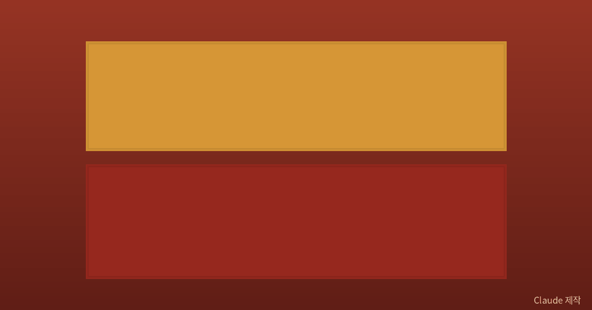

로스코의 색면 앞에서 우리는 왜 울게 되는가

미술관에서 커다란 색면 그림 앞에 한참을 서 있던 사람을 본 적이 있다. 그림에는 아무것도 그려져 있지 않았다. 붉은 사각형과 그 아래 짙은 사각형, 그게 전부였다. 그런데 그 사람은 조용히 눈가를 훔치고 있었다. 나는 그 장면이 오래 잊히지 않았다. 형체도, 이야기도 없는 색 두 덩어리가 어떻게 사람을 울게 만드는가. 마크 로스코의 그림을 떠올릴 때마다 나는 이 물음 앞에 다시 선다.

그린 것이 없는데 압도되는 경험
로스코의 성숙기 작품은 대개 거대한 캔버스에 흐릿한 경계의 색면 몇 개가 겹쳐 있는 형태다. 재현할 대상이 없다. 사과도, 사람도, 풍경도 없다. 그런데 실제로 그 앞에 서면 이상하게도 무언가에 감싸이는 느낌을 받는다. 로스코 자신은 자기 그림이 색채 실험이 아니라 인간의 근본적인 감정, 비극과 황홀과 소멸 같은 것을 다룬다고 여겼다고 전해진다. 나는 이 말이 핵심을 짚는다고 생각한다. 그는 무엇을 '보여주려' 한 게 아니라, 보는 사람 안에서 어떤 상태가 '일어나게' 하려 했던 것이다.
아름다움이 아니라 숭고
이 경험을 설명할 실마리를 나는 '숭고'라는 오래된 개념에서 찾는다. 한 근대 철학자는 우리가 느끼는 미적 감정을 두 갈래로 나누었다. 하나는 조화롭고 균형 잡힌 형태가 주는 편안한 '아름다움'이고, 다른 하나는 거대하고 헤아릴 수 없는 것 앞에서 느끼는 압도감, 곧 '숭고'다. 밤하늘의 무한한 별이나 거대한 폭풍 앞에서 우리는 두렵고도 벅찬 감정을 동시에 느낀다. 그의 통찰은, 숭고가 대상 자체의 성질이 아니라 그것을 감당하려는 우리 마음속에서 일어나는 사건이라는 데 있다. 로스코의 거대한 색면은 바로 이 숭고를 겨냥한다. 형태를 지움으로써 오히려 헤아릴 수 없는 것, 말로 다 담기지 않는 것을 향한 문을 열어두는 것이다.

거리와 침묵이라는 조건
흥미로운 것은 로스코가 그림의 '설치 방식'에까지 집요했다는 점이다. 그는 관람자가 그림에서 아주 가까이, 색면이 시야를 가득 채우는 거리에서 보기를 원했다고 한다. 멀리서 하나의 '이미지'로 감상하는 대신, 색 안으로 걸어 들어가 잠기기를 바란 것이다. 그럴 때 그림과 나 사이의 경계, 나아가 나를 둘러싼 세계와 나 사이의 경계가 잠시 흐려진다. 소음이 사라지고 침묵이 밀려온다. 나는 이 침묵이야말로 로스코가 그리려 한 진짜 주제였다고 느낀다. 그린 것이 없다는 것은 결핍이 아니라, 관람자가 자기 내면을 비추어 볼 여백을 마련해두는 일이었다.

다시, 눈물의 정체
그렇다면 그 사람은 왜 울었을까. 나는 그것이 슬픔이라기보다, 오랫동안 말로 정리하지 못했던 어떤 감정이 형태 없는 색을 통로 삼아 한꺼번에 풀려난 순간이었다고 생각한다. 우리는 늘 세상을 이름과 형태로 나누어 이해한다. 그런데 로스코의 색면은 그 이름표를 잠시 떼어낸다. 이름이 사라진 자리에서, 평소 언어의 그물에 걸러졌던 감정이 비로소 제 모습을 드러낸다.

그래서 나는 로스코 앞에서 '무엇이 그려졌나'를 묻는 대신 '내 안에서 무엇이 일어나는가'를 묻게 된다. 어쩌면 위대한 추상화는 답을 주는 그림이 아니라, 관람자를 조용한 물음 앞에 세워두는 그림인지도 모른다. 형태를 비운 캔버스가 오히려 가장 많은 것을 담을 수 있다는 역설. 다음에 아무것도 '그려지지 않은' 그림 앞에 서게 된다면, 잠시 가까이 다가가 그 침묵에 나를 맡겨보길 권하고 싶다.